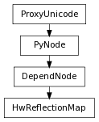

class counterpart of mel function hwReflectionMap
This command creates a hwReflectionMap node for having reflection on textured surfaces that currently have their boolean attribute displayHWEnvironment set to true.
This flag specifies the file texture name for the back side of the cube.Default is noneWhen queried, this flag returns a string.
Derived from mel command maya.cmds.hwReflectionMap
This flag specifies the file texture name for the bottom side of the cube.Default is noneWhen queried, this flag returns a string.
Derived from mel command maya.cmds.hwReflectionMap
If on, the reflection of the textures is done using the cube mapping.Default is false. The reflection is done using sphere mapping.When queried, this flag returns a boolean.
Derived from mel command maya.cmds.hwReflectionMap
If on, the reflection color replaces the surface shading.Default is false. The reflection is multiplied to the surface shading.When queried, this flag returns a boolean.
Derived from mel command maya.cmds.hwReflectionMap
If on, enable the corresponding hwReflectionMap node.Default is false.When queried, this flag returns a boolean.
Derived from mel command maya.cmds.hwReflectionMap
This flag specifies the file texture name for the front side of the cube.Default is noneWhen queried, this flag returns a string.
Derived from mel command maya.cmds.hwReflectionMap
This flag specifies the file texture name for the left side of the cube.Default is noneWhen queried, this flag returns a string.
Derived from mel command maya.cmds.hwReflectionMap
This flag specifies the file texture name for the right side of the cube.Default is noneWhen queried, this flag returns a string.
Derived from mel command maya.cmds.hwReflectionMap
This flag specifies the file texture name for the sphere mapping option.Default is noneWhen queried, this flag returns a string. Flag can have multiple arguments, passed either as a tuple or a list.
Derived from mel command maya.cmds.hwReflectionMap
This flag specifies the file texture name for the top side of the cube.Default is noneWhen queried, this flag returns a string.
Derived from mel command maya.cmds.hwReflectionMap